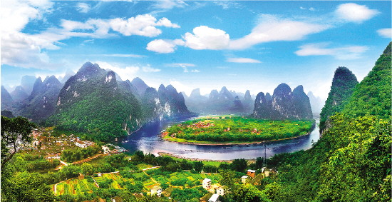
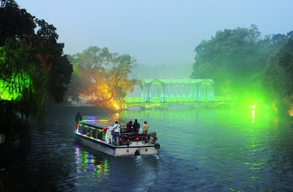
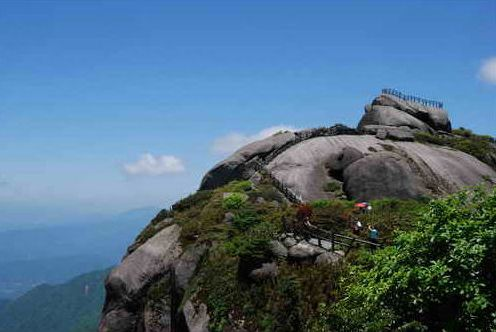

- 桂林是山水甲天下的国际旅游名城、底蕴深厚的国家历史文化名城、宜居宜养的生态山水名城。桂林市位于广西壮族自治区东北部，辖秀峰、叠彩、象山、七星、雁山、临桂6个区，阳朔、灵川、全州、兴安、永福、灌阳、龙胜、资源、平乐、恭城10个县（自治县）及荔浦市，设有桂林国家高新技术开发区、桂林经济技术开发区、粤桂黔高铁经济带合作试验区（桂林）广西园等派出机构 
- 桂林市位于南岭山系西南部，地处湘桂走廊南端，广西壮族自治区东北部，地处东经109°36＇50″―111°29＇30″，北纬24°15＇23″―26°23＇30″，境域南北长236公里、东西宽189公里。北部及东北部与湖南省交界，东南部与广西壮族自治区贺州市接壤，南部与广西壮族自治区梧州市及来宾市毗邻，西部及西南部与广西壮族自治区柳州市相接，总面积2.78万平方公里，占广西壮族自治区总面积的11.74%。 
- 桂林历史悠久。据市区宝积岩和甑皮岩洞穴发现的遗物考证，距今约一万年前，桂林就有人类祖先活动。夏、商、周时期，桂林是“百越”人的居住地。公元前214年秦始皇开凿灵渠，沟通湘、漓二水后，桂林便成为“南连海域，北达中原”的重镇。“桂林”之名，始于秦代，秦始皇置桂林、象、南海三郡，桂林郡因当地盛产玉桂而成名，这是“桂林”名称的最早起源，但郡治不在今天的桂林市。西汉元鼎六年（公元前111年），在今桂林设始安县，隶属荆州零陵郡。东汉时改属始安侯国。三国时先属蜀，后归吴。甘露元年（265年），置始安郡始安县，郡县治所都在今之桂林。隋唐时属岭南桂州总管府。唐武德四年（621年），李靖修城于独秀峰南，贞观八年（634年）改名临桂县，属桂州始安郡，光化三年（900年）始，属静江节度。五代十国时先后属楚和南汉的桂州。宋时，前属广南西路桂州，后属静江府。元时属广西行中书省静江路。明清时均属广西省桂林府。民国时属广西省，1914年改名桂林县，1940年始设桂林市，1944年11月至1945年7月28日，为日寇占领，光复后仍为广西省辖市，民国历史上长期为广西省会。

- 桂林旅游资源分为地文景观类、生物景观类、水文景观类、历史遗产类、现代人文与抽象人文景观类、旅游服务景观类等。在自然、人文、旅游服务三大景观资源系列中,以山水景观资源和人文景观资源为主. 
20211257013电子商务杨创任